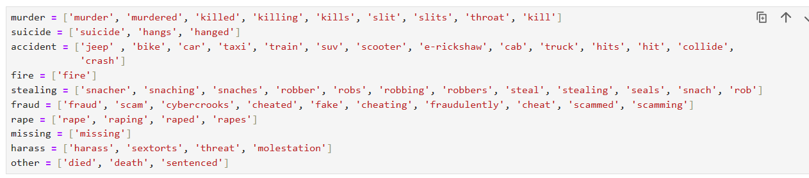

Introduction
Data cleaning is the most crucial part of the analysis step. If not done correctly, it could ruin the whole analysis.
- We will now clean the data we have extracted previously. For data cleaning, we first import the basic libraries and read the CSV file.
- We will remove the rows that do not contain the word "city" in them, as we only want to extract city news.
- Removing the 'city' word from cities and filtering based on the length of city names.
- Extracting 'date', 'time', and 'year' from the data.
- Labeling the crime. 
- After applying the custom function, we will get the following data.
- Removing rows where there is no crime and also dropping the duplicates.
- Now the last step is to convert the clean data into a CSV file and save it for the visualization part.